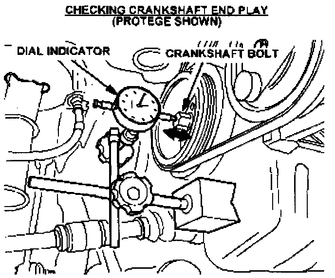
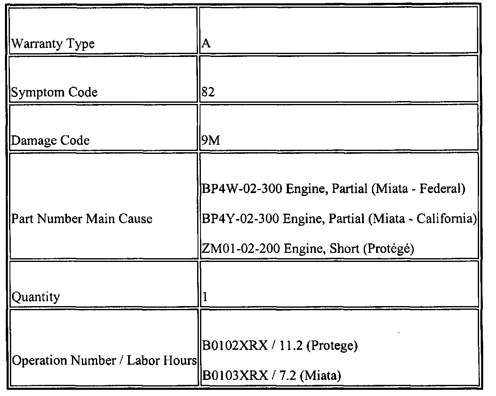

Engine - Rattling Noise When Revving Engine
M01-010/991999 Protege and 1999 Miata - RATTLING NOISE FROM ENGINE
APPLICABLE MODELS
All 1999 Protege (1.6L) with VINs lower than JM1 BJ222* X0 140057.
All 1999 Miata with (1.8L) VINs lower than JM1 NB353* X0 126468.
DESCRIPTION
A rattling noise may be heard from the engine when depressing the clutch or when revving the engine in neutral. In extreme cases, customers may experience noise at all times. This concern can be caused by improperly machined number 4 main cap of cylinder blocks which may result in premature wear of the thrust bearing.
Customers having this concern should have their vehicle repaired using the following procedure.
REPAIR PROCEDURE
1. Verify customer concern.

2. Using a dial indicator, measure and record the crankshaft end play as shown (Protege). Rotate the crankshaft 180°, and again measure and record the crankshaft end play.
^ If end play is 0.3 mm or more, proceed to STEP 3.
^ If end play is still less then 0.3 mm, refer to the ENGINE NOISE or VIBRATION CONCERNS in the Workshop Manual for further diagnostics.
3. Replace the applicable part per the Workshop Manual:
^ Protege - Short Engine
^ Miata - Partial Engine
NOTE:
Completely clean any parts that will be reused.
4. Verify the repair.

PARTS INFORMATION

WARRANTY INFORMATION
This information applies to verified customer complaints on vehicles covered under normal warranty. Refer to the SRT microfiche for warranty term information.

Disclaimer